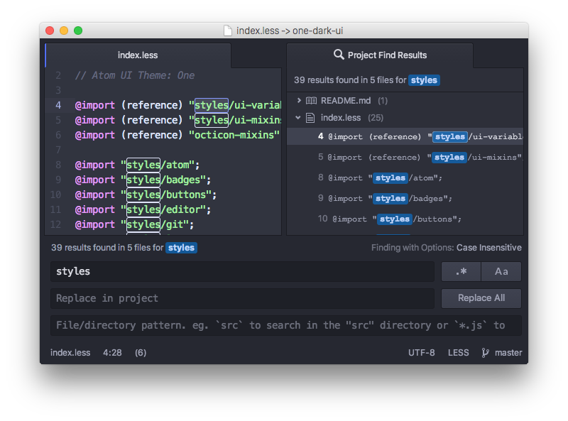

查找和替换
在 Atom 里能非常方便快捷地在文件或者项目范围内进行文本查找和替换。
cmd-F：在缓冲区中查找
cmd-shift-f：在整个项目中查找
如果执行了上面某一个命令，在屏幕的底部会出现一个 Find and Replace 面板。

图 1. 在当前文件查找和替换
按下 cmd-F 并输入字符串可以在当前文件中查找，多次按下回车（或 cmd-G，或者 Find Next 按钮）能循环查找当前文件中的匹配内容。Find and Replace 面板里提供了选项，可以设置大小写敏感，正则表达式匹配和区域搜索等。
在 Replace in current buffer 文本框中输入字符串，可以将匹配到的结果替换成另一个字符串。例如，如果你想要把所有的 Scott 都替换成 Dragon ，你可以把它们填到两个文本框中，然后点击 Replace All 按钮。
在按下 cmd-shift-F 弹出的面板里，可以对整个项目范围内进行查找和替换。

图 2. 在项目范围内查找和替换
这是一个很好的功能，可以用于找到项目里某个函数的所有调用，所有连接某个锚文本的地方，或者某个错误拼写的所有位置。点击查找结果列表里的某一行可以跳转到对应的位置。
在 File/Directory pattern 文本框中输入 glob pattern (译者注：通配符)，能把搜索范围限制在项目全部文件的某个子集。在打开了多个项目文件夹时，这个功能还可以用于在其中一个文件夹中查找。例如，你打开了 /path1/folder1 和 /path2/folder2，你可以输入一个以 folder1 开头的通配符，只在第一个文件夹中查找。
当焦点在 Find and Replace 面板上的时候，按 escape 键可以隐藏它。
查找和替换功能在 atom/find-and-replace 这个 package 中实现，并且使用了 atom/scandal 这个 package 执行实际的查找。